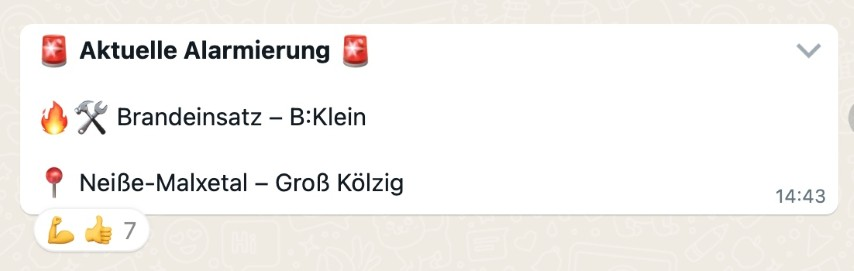

🚒 EVI Lausitz
EVI steht für Einsatz-Vor-Information – direkt aus der Leitstelle Lausitz (Cottbus), in Echtzeit auf dein Handy.
Du bekommst automatisch Feuerwehr-Einsätze aus der Region per WhatsApp – schnell, anonym & kostenlos.
🔗 Kanal abonnieren
👉 Hier geht’s direkt zum EVI WhatsApp-Kanal
📠Regionale Kanäle für spezifische Landkreise
Wenn du dich für Einsatzinformationen speziell aus deinem Landkreis interessierst, kannst du auch einen der folgenden regionalen Kanäle abonnieren:
- 🟥 Landkreis Elbe-Elster
- 🟪 OSL
- 🟩 LDS
- 🟦 SPN
- 🟨 Cottbus
ℹ️ Hintergrund
Viele kennen noch EVI von Twitter. EVI Lausitz setzt diese Idee für die Region fort – diesmal über WhatsApp.
💬 Weitererzählen hilft!
Unser Kanal ist in der WhatsApp-Suche (noch) nicht sichtbar – teile ihn gern mit anderen oder in deinem Status.